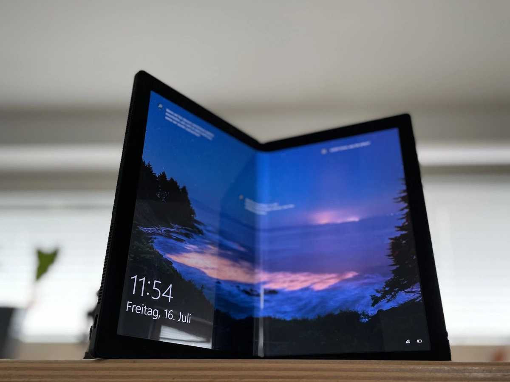

Techno.co.id -
Lenovo mengumumkan PC generasi terbaru ThinkPad X1 Fold, yang diklaim meredefinisi kategori PC layar lipat yang diciptakan oleh perusahaan di tahun 2020.
Mengutip siaran persnya, Sabtu (3/9/2022), ThinkPad X1 Fold merupakan laptop 16-inci yang diklaim paling ringan dan paling serba bisa di dunia.
Generasi baru ini menghadirkan perangkat yang portabel dan kuat, dengan desain yang lebih mulus dan tipis, yang bisa dipakai secara nyaman sebagai PC utama.
Desain laptop mengusung layar lipat OLED 16 inci yang 22 persen lebih besar, sasis yang 25 persen lebih tipis, dan bezel yang lebih tipis mengelilingi layar untuk memproduksi tampilan yang premium dan ramping
Serta, terdapat bingkai aluminium dan cover belakang yang 100 persen terbuat dari kain tenun berkualitas.
Generasi teranyar ThinkPad X1 Fold ditenagai oleh Intel vPro, desain Intel Evo dengan prosesor hingga Intel Core i7 Generasi ke-12 dan Intel Iris X Graphics.
Terdapat penyimpanan SSD hingga 1TB dan ipsi memori hingga 32GB LPDDR5, yang berarti Windows 11 Home atau Pro akan berjalan dengan mulus terlepas dari mode penggunaan yang dipilih.
Generasi baru ThinkPad X1 Fold juga menawarkan backlit keyboard opsional yang berukuran penuh dengan TrackPoint dan haptic touchpad besar, yang dapat bekerja secara terhubung atau terpisah dari PC tergantung mode yang dipakai.
Keyboard ini bisa terhubung secara magnetik pada setengah bagian bawah layar untuk mode laptop klasik, yang memberikan pengalaman laptop 12 ini dengan performa penuh.
Layar Perangkat
Techno.co.id -
ThinkPad X1 Fold baru ini juga menghadirkan ruang yang jauh lebih luas. Layarnya dapat beradaptasi menyesuaikan berbagai cara penggunaan perangkat yang sesuai dengan keinginan penggunanya.
Panel layar lipat OLED berukuran 16,3 inci dengan aspek rasio 4:3. Ini disebut menawarkan ruang maksimum dalam pengemasan yang ringan, dengan orientasi layar serba bisa, baik dalam mode portrait ataupun landscape, dan tentunya juga dapat dilipat.
Layar perangkat dapat dikonfigurasi dengan pen yang terhubung secara magnetik memanfaatkan protokol Wacom.
Selain itu, ThinkPad X1 Fold baru bisa menayangkan menayangkan tayangan acara, film, dan olahraga dengan keterangan layar HDR hingga 600nits dan dalam Dolby Vision di perangkat yang mendukung.
ThinkPad X1 Fold menampilkan bezel dengan ketipisan tidak lebih dari 10mm dan berukuran 8,6mm jika tidak dilipat, dengan ketipisan jika dilipat yaitu 17,4mm.
ThinkPad X1 Fold juga sudah melalui metode pengujian ketat milik Lenovo ditambah dengan standardisasi MIL-STD-810H untuk memaksimalkan durabilitas dan kepastian dari kualitas laptop.
Cover laptop yang terbuat dari kain tenun daur ulang juga telah melalui pengujian durabilitas dan reliabilitas.
Layar Lipat yang Lebih Besar

Techno.co.id -
Perangkat ini lebih lanjut menawarkan beberapa mode yang dapat diatur oleh interface Mode Switcher yaitu mode laptop atau Classic clamshell, mode landscape, Mode portrait, Mode book, dan mode tablet.
Layar yang lebih besar membutuhkan desain ulang untuk engsel dan panelnya, ini menghasilkan engsel berbentuk bel yang memudahkan panel layar lipat OLED untuk dilipat secara datar baik pada posisi terbuka ataupun tertutup sehingga sistem engsel menjadi lebih tipis.
Lebih dari dua ratus bagian berpindah secara sinkron dalam desain engsel ini untuk memaksimalkan konsistensi dan ketahanan layar.
Interface layar baru juga dikembangkan, di mana ini melipat area non-aktif yang meningkatkan ketahanan serta membuat bezel menjadi lebih tipis.
Hybrid shutter frame pada perangkat juga didesain ulang dengan keuntungan ganda dari ketipisan perangkat, yang menciptakan lebih banyak ruang untuk antena, dan menyederhanakan pekerjaan pengguna di lapangan.
Lenovo mengembangkan lembaran grafit lipat yang berstatus patent-pending untuk mendistribusikan panas ke seluruh sistem dalam rangka menghasilkan desain tanpa kipas yang bertenaga luar biasa.
Selain itu, keyboard meliputi TrackPoint Communications Quick Menu App yangdapat diklik, dan menawarkan akses cepat ke fungsi kamera dan mikrofon. Tiga port USB Type C, termasuk dua port Intel Thunderbolt 4, juga disematkan pada perangkat.
Hadirkan Beberapa Fitur Cerdas
Techno.co.id -
Tiga speaker Dolby Atmos terpasang dan dua speaker juga selalu aktif menjaga suara stereo. Terdapat twin dual microphone arrays yang salah satunya aktif bergantung pada mode yang digunakan.
Sementara, Dolby Voice mengoptimalkan performa mikrofon dan speaker memanfaatkan teknologi audio spasial. Lenovo juga menanamkan Visual Sensing Controller (VSC) dari Intel pada ThinkPad X1 Fold baru.
Di mode portrait, landscape, ataupun laptop, VSC Intel otomatis mengelola pemanfaatan ruang pandang horizontal yang meningkat hingga 75 derajat pada kamera untuk mengambil keuntungan dari framing otomatis Windows 11.
Fitur lainnya seperti Smart sensing untuk membuat perangkat ini jadi sangat peka dan responsif.
Wake-on apporach juga bisa otomatis mengenali pengguna, dan membangunkan sistem secara instan dan siap saat pengguna mendekati perangkat, saat dikombinasikan dengan Windows Hello, menawarkan zero-touch login yang mudah.
Untuk keamanan tambahan, "onlooker detection" mengabari pengguna jika ada yang mengintip perangkat, dan fitur "walk-away-lock" mengetahui kapan pengguna pergi dan mengunci sistem untuk mencegah akses tak diinginkan.
VSC Intel menggunakan smart sensing untuk mengoptimalkan pengaturan layar dengan mengurangi refresh rates berdasarkan tipe konten dan menggunakan smart dimming, meminimalisasi tenaga ketika layar tidak digunakan secara aktif.
Mengutip laman resmi Lenovo, generasi terbaru dari ThinkPad X1 Fold dengan Windows 11 diharapkan akan tersedia di kuartal 4 2022, dengan harga di Amerika Serikat mulai dari USD 2.499 (sekitar Rp 37 juta).